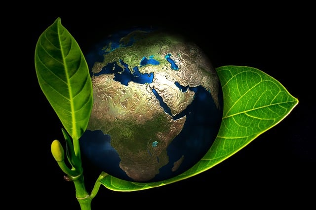

Protéger l'environnement pour un avenir durable en Guinée
La Guinée, souvent appelée le "Château d'eau de l'Afrique de l'Ouest", est dotée d'une richesse naturelle exceptionnelle. Cependant, comme de nombreux pays en développement, elle fait face à des défis environnementaux majeurs qui menacent son écosystème unique et la qualité de vie de ses habitants. Dans cet article, nous explorerons les enjeux environnementaux cruciaux en Guinée et proposerons des actions concrètes pour préserver notre précieux patrimoine naturel.
1. La déforestation : un défi majeur
La Guinée abrite une partie importante de la forêt guinéenne d'Afrique de l'Ouest, un hotspot de biodiversité. Malheureusement, la déforestation progresse à un rythme alarmant, principalement due à l'agriculture sur brûlis, l'exploitation minière et l'urbanisation non planifiée. Pour lutter contre ce fléau, nous devons :
- Mettre en place des programmes de reboisement à grande échelle
- Promouvoir des pratiques agricoles durables
- Renforcer la législation sur l'exploitation forestière
2. La pollution de l'eau : préserver notre or bleu
Les sources d'eau en Guinée, vitales pour l'ensemble de la région, sont menacées par la pollution industrielle, l'exploitation minière et le manque d'infrastructures d'assainissement. Pour protéger cette ressource précieuse, nous devons :
- Améliorer le traitement des eaux usées
- Réglementer strictement les activités industrielles près des cours d'eau
- Sensibiliser la population à l'importance de la préservation de l'eau
3. La gestion des déchets : vers une économie circulaire
La gestion inefficace des déchets est un problème croissant, particulièrement dans les zones urbaines. Pour améliorer cette situation, nous proposons de :
- Développer des infrastructures de collecte et de traitement des déchets
- Encourager le recyclage et le compostage
- Éduquer la population sur la réduction des déchets à la source
4. La protection de la biodiversité : notre richesse naturelle
La Guinée abrite une faune et une flore uniques, mais de nombreuses espèces sont menacées. Pour préserver cette biodiversité, nous devons :
- Étendre et mieux gérer les aires protégées
- Lutter contre le braconnage et le commerce illégal d'espèces
- Promouvoir l'écotourisme comme alternative économique durable
Conclusion : Un appel à l'action
La protection de l'environnement en Guinée n'est pas seulement une nécessité écologique, c'est aussi un impératif économique et social. En préservant nos ressources naturelles, nous assurons un avenir durable pour les générations futures. Chaque citoyen, chaque entreprise et chaque institution a un rôle à jouer dans cette mission cruciale.
L'UNPG s'engage à faire de la protection de l'environnement une priorité nationale. Nous appelons à une mobilisation générale pour mettre en œuvre des politiques ambitieuses et des actions concrètes. Ensemble, nous pouvons construire une Guinée plus verte, plus propre et plus prospère.
Découvrez notre programme environnemental